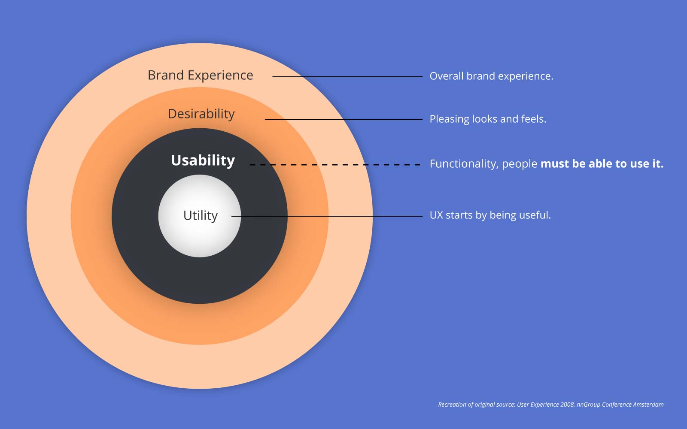
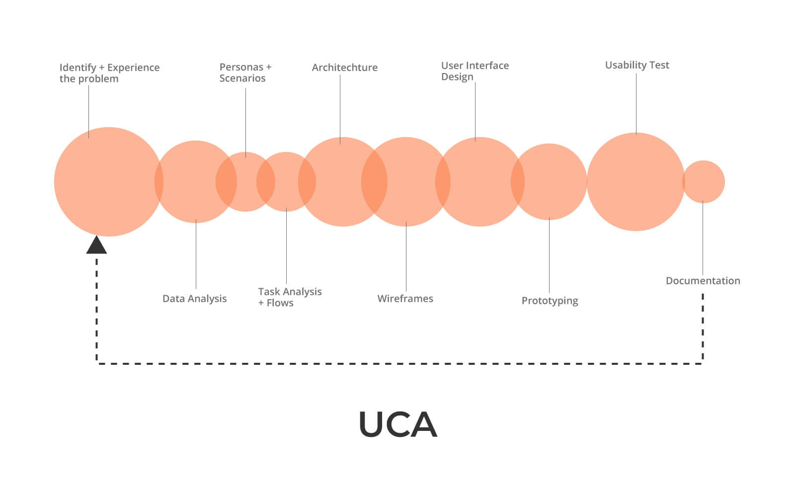
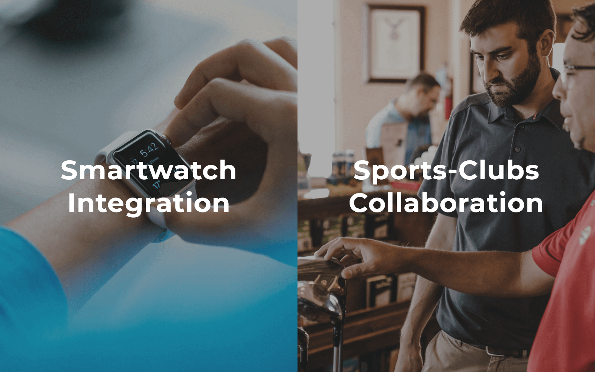

Background:
A mobile app to record daily activities and progress made by young athletes and their trainers as an attempt to replace diary writing efforts. It also attempts to minimize challenges in communication & collaboration.
- Design:
- Self-initiated and Owned.
- Name:
App name ProLetics is self-coined after much research.
- Time:
- 3 Months.
Motivation:
Aspiring young sports players struggle to keep track of their daily training session data. This problem is more evident in those players who are preparing for a professional career. They have to manually write diaries or journals on daily basis. It becomes difficult for both players and their coaches and trainers who analyse data of the progress made or for a reference "look-back".
Challenge:
Contextual interviews or observations were tough to arrange. Most coaches are not trained formally to create training plans. Gathering accurate data from authentic sources such as Athletic Federation of India, Indian Olympic Association, National Institute of Sports. Design team of one designer and time-budget of 3 months.
Success Metrics
- Reduce daily time required in logging data to less than 5 minutes.
- 100 per cent success in creating and sharing or allocating training plans.
- 100 per cent success in finding, viewing & using past training data logged.
- Upto 10 minutes required in creating and sharing plans.
- Tasks such as conveying news and registering for event takes less than 3 minutes.
Process: User Centered Analysis
The usual process of UCA revolved around the fact of delivering function first over form. Deploying functional product that would migrate users from daily diary-writing of activities done, training methods learnt, nutrition or sleep information in the physical world to the digital world and test some hypotheses. The decision was also driven by the philosophy of being "first-to-market".

Design philosophy for the project.

A typical context-flexible User Centered Analysis process.
Stakeholder Interviews
These were conducted in the context and environment viz., at home for players while they were writing diary and making notes, on field or office where the trainers were creating plans for training. In total, I conducted 9 semi-structured interviews facing the challenges of recruiting right users and all interviews were audio-recorded.
Synthesizing the Findings
- User interviews revealed more pain-points. The ground reality and inner workings of player-trainer system are much more complex.
- Most coaches or trainers are not formally educated on how to impart the training and do so on basis of their experience. Though, they are willing to learn the technicalities.
- Communication and sharing of data happens via whatsapp. Documents are shared which are difficult to read through.
- Coach & Parents both keep a physical diary of data realted to payments and fees.
- Users often took to the Internet for latest news and motivation for training and competition updates.
Usability Testing (UT)
“At times the training sessions aren't executed exactly as per plans. Factors like injury, rain-on-field, exams break, etc. come into play. There must be flexibility in the short-term plans to achieve long-term planned goals.”
Getting it wrong!
My first failure was the phase-1 design that exposed the haste our team of stakeholders made in deploying to the market and also revealed lack of research.
It was based on biased research, one-dimentional experiences of just 2 interviewees.
The Phase-1 design solution pointed in the right direction, but it did not fully cater to the exact needs of the users.
The UT revealed that professional training involves more parameters under which the players are trained. The training plans and execution is complex and much layered.
I worked closely with more coaches and trainers, players from the athletics field, and parents of young pupils to better understand the technical nitty-gritties of their respective experiences. It made a drastic difference.
Architecture
Wireframes
Wireframes depicting Phase-2 design ideas.
Interface Design
Learnings from user interviews, enhanced needs, and findings of the usability test informed for a new face for the application.
Impact
- More than 30 users onboarded for testing the Beta release at various sports training centers in Pune city.
- 60-70% reduction in time taken needed to log daily training data. It requires 4-5 minutes using app.
- 100% logging of data by players and upto 80% coaches.
- Only mobile app which trains both Athletics players and coaches in planning as per guidelines of Athletics Federation.
What Next?
